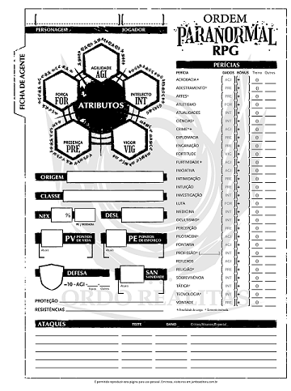
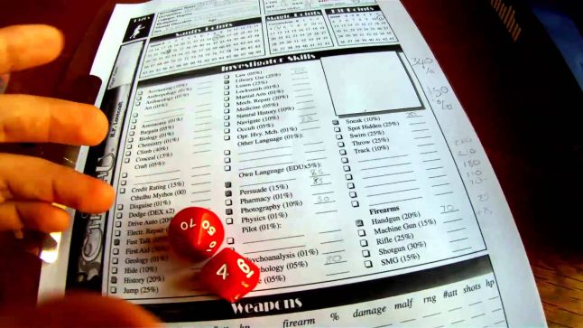

Dungeons and Dragons é um jogo de fantasia medieval, e isso significa que existem elfos, anões, dragões e muito mais! Você pode ser, basicamente, o que quiser nesse jogo… mas se for a sua primeira vez dê uma olhada com mais calma nas sugestões do livro do jogador.
Escolher uma classe de personagem é tão importante quanto escolher um raça. A classe de personagem vai definir o tipo de personagem que você vai ser. Como esse personagem vai interagir mecânicamente com o jogo.
CRIANDO UMA FICHA DE ORDEM PARANORMAL
O primeiro passo é ter uma ideia geral do seu personagem. Quem ele era e é atualmente. Para isso, o livro sugere algumas perguntas relevantes, não apenas para a criação de personagem, mas para futuras explorações do passado de seu agente durante as sessões.

Todo personagem tem cinco atributos, sendo estes Força (FOR), Agilidade (AGI), Vigor (VIG), Presença (PRE) e Intelecto (INT). Leia a resenha anterior a este guia para saber para que serve cada atributo.
CRIANDO UMA FICHA DE CALL OF CHTULHU
Planeje um modelo geral para o seu personagem antes de jogar os dados ou anotar alguma coisa. Decida quem é seu personagem qual é a sua profissão, o quanto ele sabe sobre a mitologia de "Call of Cthulhu", quais são suas crenças e ambições e como é sua personalidade em geral.

Escolha uma profissão para o seu personagem a partir da lista de profissões iniciais no livro ou invente uma nova profissão que não esteja listada (pergunte ao Mestre de Jogo se isso é aceitável).